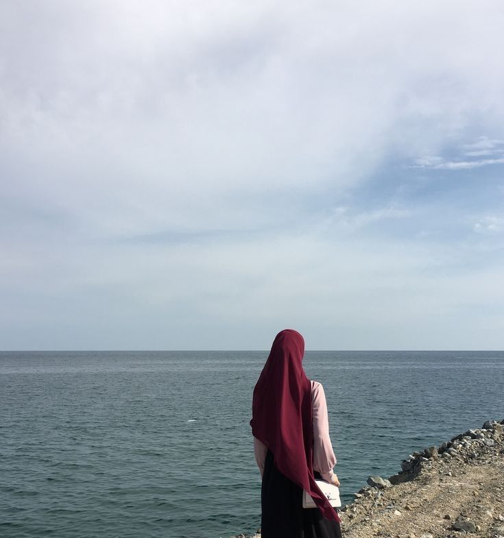

ABOUT ME
I love reading and surfing internet
Hi! My name is NorAlia Izzati Binti Mohd Sapavi and I am 22 years old. I was raised in Kuala Kangsar, Perak and still living in it till now.
I pursued my studies in netcentric computing and am presently enrolled at UiTM Shah Alam in Selangor. I am now in my fourth semester, with two more semesters and one semester of internship remaining.
The website that I developed was created as part of an ongoing table for the topic I studied, CSC574 Dyamic Web Application Development.
I hope that by using what I've learned, I'll be able to fulfil my goals and be valuable to both of my parents.

I've always been an avid reader and a passionate internet user.Reading has always been a source of learning and enjoyment for me,
and I like experimenting with numerous book genres, including nonfiction, fiction, novels, comic books, and many more.
I find it tremendously enlightening to lose yourself in the world of literature, to become immersed in new concepts, and to interact with many viewpoints.
I also enjoy exploring the vastness of the internet, which is like a bottomless sea of knowledge and enjoyment.
I am always astounded by the sheer range and depth of knowledge that is at my disposal, whether I am researching a subject for business,
perusing social media for leisure, watching a movie or play, or even gaining something fresh through online courses.
Last but not leats, ENJOY ;)